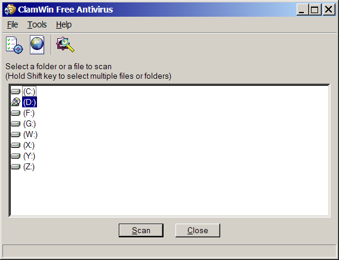

Download
Virus Database Update: This
will cause ClamWin to check for updates to the virus database, and
download any updates that are available.
Download
Virus Database Update: This
will cause ClamWin to check for updates to the virus database, and
download any updates that are available.There are several ways to use ClamWin:
Run from the Start menu
Run from the system tray icon
Scheduled scans
Outlook integration
Windows Explorer integration
This section will discuss each method in turn
By default, during installation, a program group named "ClamWin Antivirus" is created, with one item, "Virus Scanner". Selecting this item will start ClamWin with the main window open, as shown below:

To scan a file or a folder, simply select it in the main window, and click Scan. Multiple files/folders can be selected by holding down the Control or Shift key whilst clicking.
To run ClamWin from the system tray icon, either double-click on the icon or right-click and select Open ClamWin. ClamWin will be started with the main window open, as above.
The system tray icon allows other options to be selected on right-click:
Download
Virus Database Update: This
will cause ClamWin to check for updates to the virus database, and
download any updates that are available.
Configure ClamWin: This will display ClamWin's preferences dialogue, where ClamWin's settings can be altered.
Scheduler: If the mouse is moved over this option, a sub-menu will be displayed. From this sub-menu, scheduled scans can be configured, already configured scheduled scans can be run, or running scans can be stopped.
Display Reports: If the mouse is moved over this option, a sub-menu will be displayed. From this sub-menu, the virus database update report or scan report can be viewed.
Check Latest Version: This will open the default browser at the ClamWin web site, and check the installed version of ClamWin. The page will display a message showing the latest version available, and whether or not the latest version is installed, along with a link to the download page, so that a newer version can be downloaded if required.
Visit ClamWin Website: This will open the default browser at the ClamWin web site.
Scheduled scans can be set up in the preferences dialogue. If a scheduled scan is set up, ClamWin will run a scan at the specified time, without interrupting the user. If a virus is found, a balloon notification will appear above the system tray icon (note: the balloon notification feature does not work in Windows 98). The action taken by ClamWin on detecting a virus will be determined by what has been set in the General tab of the preferences dialogue.
If Outlook is installed on the computer, and the Integration with Microsoft Outlook option was selected during the installation of ClamWin, then ClamWin will scan all incoming and outgoing e-mails for viruses. This is done entirely automatically, with no user intervention required. If an incoming e-mail has a virus attached, the virus attachment is replaced with a report file.
If the Integration with Windows Explorer option was selected during the installation of ClamWin, an extra option (Scan For Viruses With ClamWin) will be added to the Windows Explorer right-click menu. Right-clicking on a file or folder and selecting this option will scan the file or folder for viruses, providing a quick and simple way to scan suspicious files.